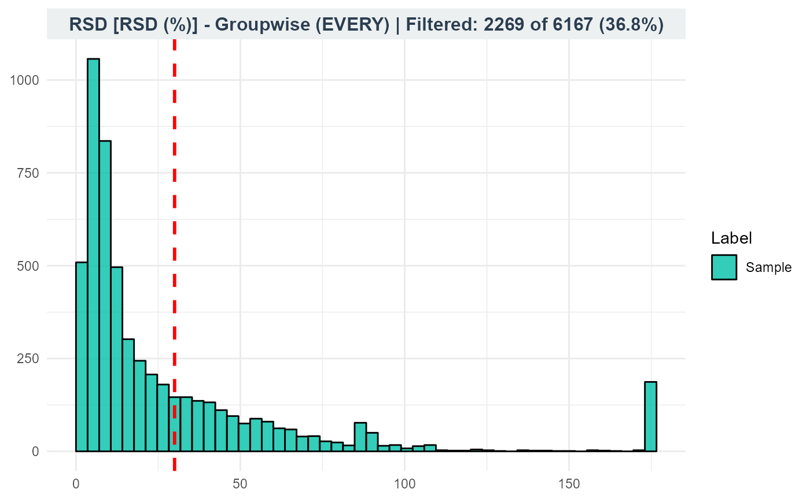

mc_filter_qc.RdCalculate zero abundance, mean intensity, relative standard deviation, D-ratio, or minimum intensity for selected sample groups, then retain features that pass every selected metric.
A metabocensor_result returned by mc_prepare() or a filtering function.
Character vector containing any of "zeros", "mean", "rsd", "dratio", and "min". The default empty vector removes nothing.
How to combine samples or group-level filtering decisions. Default: "group_any".
"group_any"For each selected metric, a feature must pass in at least one evaluated group. Different groups may satisfy different metrics.
"group_every"For each selected metric, a feature must pass in every evaluated group.
"pooled"Combine samples from the evaluated groups before calculating each metric.
When multiple metrics are selected, a feature must pass all of them.
Group labels to evaluate. NULL or an empty vector selects all groups. For D-ratio, the group specified by qc_group is excluded from the biological denominator. Select biological groups explicitly to avoid including blanks.
How to express zero intensities: "count" (default) counts samples with zero intensity; "percent" expresses these samples as a percentage of the evaluated samples. Used only when "zeros" is selected in filters.
Zero-count or zero-percentage threshold. Default: 1. Features pass only when their zero count or percentage is strictly less than this threshold. With zero_metric = "count", a cutoff of 1 allows no zeros. With zero_metric = "percent", a cutoff of 50 rejects features with exactly 50 percent zeros.
Minimum arithmetic mean intensity. Equality passes. Default: 5000.
Maximum RSD in percent. Equality passes. Default: 30.
Minimum observed intensity. Equality passes. Default: 1000.
Exactly one existing pooled-QC group label for D-ratio, containing at least two samples. Required only when dratio is selected.
Maximum D-ratio in percent. Equality passes. Default: 50.
Optional sample-group labels. An unnamed vector must follow x$sample_cols; a named vector must cover those sample names exactly. NULL uses x$labels.
RSD is 100 * sd(intensity) / mean(intensity) using the sample standard deviation. A zero or nonfinite mean gives an undefined RSD; undefined and infinite RSD values fail.
D-ratio is 100 * sd(QC) / sd(biological). In group modes, each biological group has its own denominator; pooled mode uses all selected biological samples together. At least two finite observations are needed to calculate each standard deviation. A zero biological standard deviation gives an undefined ratio and fails, including when the QC standard deviation is also zero. A zero QC standard deviation with a positive biological standard deviation gives zero and passes.
All metrics use the same input features and original intensity scale. In group_any mode, different metrics may pass in different groups. A feature must still pass every selected metric after group aggregation.
Missing values are omitted from summary statistics. In group modes, missing comparison results are omitted by any/all; consequently, a feature with only missing comparisons for a metric fails group_any but passes group_every. Pooled mode requires finite metric values. Import normally converts missing intensity entries to zero.
Each filtering stage can be used once per result object. To change its settings, start again from the object saved before that stage. Separate stages may be called in any order; each receives only the features retained so far.
The updated result with retained table, removed IDs in removed_ids$qc, and updated counts. qc stores mode, zero units, and cutoffs.
qc_tbl contains Feature, Label, metric, value, pass, and keep for features entering the step. pass is the group-level comparison; keep is the group-aggregated decision for that metric, not the final decision across all metrics. Failures can overlap between metrics, so their counts should not be added.
peak_file <- system.file(
"extdata", "orbi_iimn_gnps_quant.csv",
package = "MetaboCensoR", mustWork = TRUE
)
imported <- mc_prepare(
peak_file, type = "mzmine",
sample_keywords = c(".mzML", "Peak area")
)
metadata_file <- system.file(
"extdata", "metadata.csv",
package = "MetaboCensoR", mustWork = TRUE
)
imported$labels <- mc_labels_from_metadata(
metadata_file, sample_names = imported$sample_cols,
sample_col = "Sample name", label_col = "Label"
)
# Illustration of QC filtering, not the published Orbi settings.
# Select biological groups explicitly; exclude blanks and QC samples.
biological_groups <- setdiff(unique(imported$labels), c("Blank", "QC"))
after_qc <- mc_filter_qc(
imported, filters = c("zeros", "rsd"),
groups = biological_groups, mode = "group_every",
zero_metric = "percent", zero_cutoff = 50, rsd_cutoff = 30
)
head(after_qc$qc_tbl)
#> Feature Label metric value pass keep
#> 1 108 Sample zeros 0 TRUE TRUE
#> 2 181 Sample zeros 0 TRUE TRUE
#> 3 175 Sample zeros 0 TRUE TRUE
#> 4 231 Sample zeros 0 TRUE TRUE
#> 5 43 Sample zeros 0 TRUE TRUE
#> 6 145 Sample zeros 0 TRUE TRUE
mc_plot_qc(after_qc, filters = "rsd", interactive = FALSE)
